← 返回阅读库 · 原论文目录
论文讲解阅读文档 · 表征学习 · v174
Probabilistic Representations for Video Contrastive Learning[2204.03946]
视频时长 00:14:46；讲解文字 7,124 字符；提取讲解画面 27 张。按视频原顺序阅读，每段文字保留时间戳。
文字来自整段视频的自动语音转写，按自然停顿分段，并与 PPT / 论文页面 / 演示画面对齐。未将讲解压缩为摘要；术语、数字和口述公式请结合画面及原论文核对。 阅读稿已校正规范部分明确术语误识别；原始逐字稿和每处修改记录另行保留。
讲解画面为源视频截图（640×360），不是可编辑 PPT 文件。全片按每秒 2 帧扫描内容变化，逐步展开页保留；连续动画保留代表画面。清晰度受源视频限制。
下载完整资料包 · 含离线 HTML、PDF、Word、全部 PPT 画面和字幕。
原论文与材料
Probabilistic Representations for Video Contrastive Learning · 下载完整 PDF（16 页）
按时间阅读
00:00:00–00:00:20 · 画面 001
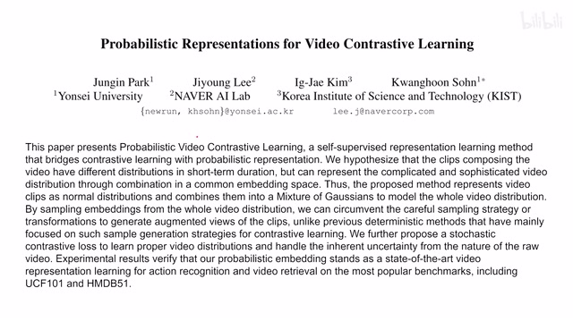
00:00:00–00:00:20 · 画面 001大家好啊,今天我们来快速说一篇论文Probabilistic Representations for Video Contrastive Learning这篇论文呢,就是首先你看到它是做这个 contrastive learning 的主攻这个 video同时呢,它的 representation 是一个这个概率而不是一个确定的这么一个 representation那么下面我们就来看作者的实现吧
00:00:20–00:01:32 · 画面 002
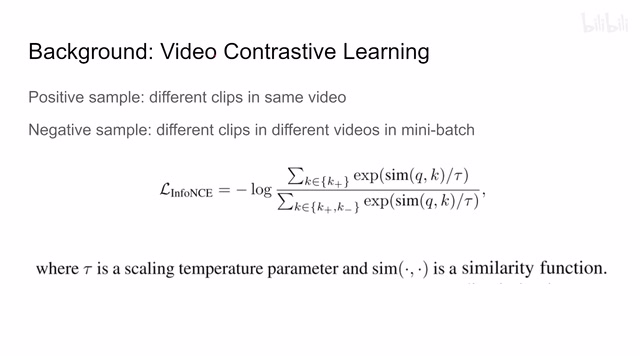
00:00:20–00:01:32 · 画面 002那首先,这个 video contrastive learning一点小的背景知识那首先,contrastive learning 无非就是定义这个正样本和负样本正样本的 representation 相互靠近负样本的 representation 相互远离那么在 video 里面我们有很大的便利就是我的同一个 video我在里面采出不同的小的片段来它们都属于同一个 video它们在最后分类的时候它们肯定也是归到同一类里的所以这些样本就是正样本其他的 video 里面的这些小的片段都是负样本
那么一个标准的 Loss 比如说这个 InfoNCE 对吧这个我们之前都介绍过了但是呢作者认为呢这种设计呢是存在问题的也就是同样的一段视频它可以被分到不同的这个类别里面或者说是两个类别里的视频都有一段相似的长相类似的这么一段视频那就比如说你抬起胳膊和这个挥挥手这是两个不同的动作但是它们都有一段呢就是需要你把这个手臂抬起来就类似于这种感觉那么往往就是这些片段呢会让我们的这个 encoder confuse 对吧因为你明明都是这个 negative sample 但是它们长得很像它们长得差不多对吧这样就容易造成一些困扰那么为了解决这个问题呢作者的思路呢就是你看原来我们同一个 video 里面的不同的这个 video clip 我们呢让它都是集中到一起
00:01:32–00:02:43 · 画面 003
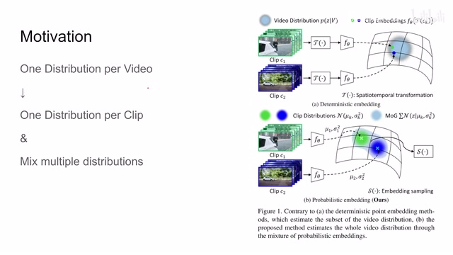
00:01:32–00:02:43 · 画面 003大家一起来做一个这个 video 的 distribution 那我们继续来看这里比如说这种经典的这种 contrast learning 这叫 deterministic 确定性的啊那么就是你的一个 video 里面它有两个 clip 对吧他们呢是过了这个 transformation 就是 data augmentation 然后呢过了 encoder 之后送你来那因为我们知道他们是来自同一个 video 的所以强行把这两个 clip 放到了一起这个是传统的做法那现在呢把这个 data implementation 也去掉了但是呢后面我们有新的方法去把它加上那这里呢等一下我们再说到那就是不同的 video clip 那得到一个 representation 我们就因为这个 representation 呢是一个这个 distribution 然后呢不同的 distribution 集合起来就是把所有的 clip 的 distribution 集合起来这样子呢形成这个 video 的 distribution
然后呢从这个 distribution 中采样就可以得到我们真正的这个 video 的这个 representation 是一个尝试用更加灵活的方法去建这个 video distribution 的这么一个方法那么下面我们具体来看作者的这个实现啊那这里呢假设我们拿到一个 video 啊它的这个是 v 我们在其中随机采出 n 个这个 clips 也就是 n 个这个片段那我们叫 ce 到 cn 那首先呢每个小片段吧你都可以送到这个 encoder 里面得到一个 representation
00:02:43–00:03:56 · 画面 004
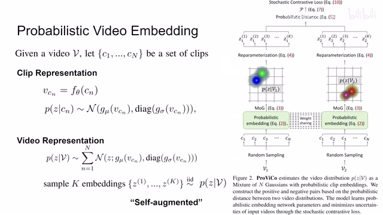
00:02:43–00:03:56 · 画面 004这里 cn 送到 fθ 这个 encoder 里面得到一个 vcn 这个是它的 representation 然后根据这个 representation 我们就可以做跟 VAE 相似的事情就是我用很多个高深 distribution 去描述我们的 representation 为了生成高深 distribution 我们需要高深 distribution 它的平均值它的方差所以从 vcn 出来我们有一个网络来生成它的均值有一个网络来生成它的这个标准差或者说是生成它的方差那这样子呢我们对这个 clip 它的这个 representation 就实际上是我们有了一串这个高斯 distribution 然后呢这些高斯 distribution 它们是相互独立的所以你可以看到它的这个方差这个斜相关矩阵呢它是一个对角阵每个高斯 distribution 是相互独立的那么通过这样一种联合分布我们就描述了这个 videoclip 它的这个 representation 它的这个 distribution
那这一块其实就跟 VAE 很像，你这个输入进来，过一个 encoder 对吧？然后呢，解除均值，来解除它的这个标准差来，那这样子呢，你描述的是一个概率分布。那后面呢，你想要得到具体的这个 representation，你在这个概率分布里面采样那就可以了。这个呢，是这个 clips representation。那现在呢，你一个每个 VE 里面有 n 个这个 clips。
00:03:56–00:04:05 · 画面 005
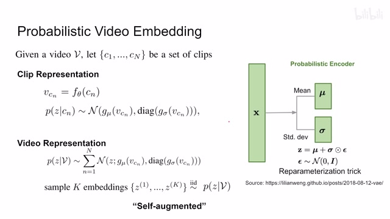
00:03:56–00:04:05 · 画面 00500:04:05–00:04:07 · 画面 006
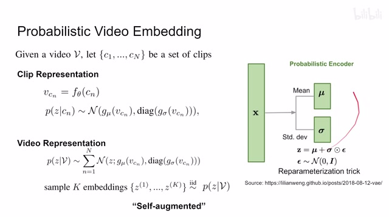
00:04:05–00:04:07 · 画面 00600:04:07–00:04:15 · 画面 007
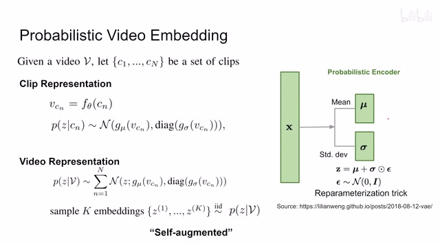
00:04:07–00:04:15 · 画面 00700:04:15–00:05:10 · 画面 008
00:04:15–00:05:10 · 画面 008你的这个 video representation 呢，就是直接这 n 个 clips 啊，给他这个联合这个分布他们加起来，把这 n 个 clips 他的这个 distribution 加起来。那么最后呢你想描述这个 video representation 啊，你就在这个联合的这个 distribution 里面，就是这个 distribution 里面采样。比如说采出 k 个这个 inventor 来，你就做这个独立的采样啊，那得到这个 k 个 representation。那这个 k 个 representation 呢，
那这个 K 个 Representation，这 K 个 Embedding 呢，就是我们的这个 Video 的这个 Embedding。那这个时候我们来看，它们都来自同一个 Distribution，但是呢这个每次采样的具体的结果呢又不一定一样。所以这里作者称它为是一种 self-augmentedself-augmentation。也就是说之前我们并没有做 data augmentation，但是这里随机采样的过程就像 data augmentation 一样，它把同一个视频稍加变化产生的不同的这种 representation 给它找了出来。后面既然是做 contrastive learning，我们当然是有不同的 video，你可以看到这边我们有两个不同的 video，大家都先是随机采样出 n 个 clip video clip 来。
00:05:10–00:05:15 · 画面 009
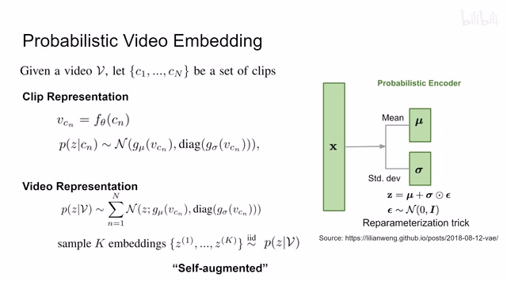
00:05:10–00:05:15 · 画面 00900:05:15–00:06:27 · 画面 010
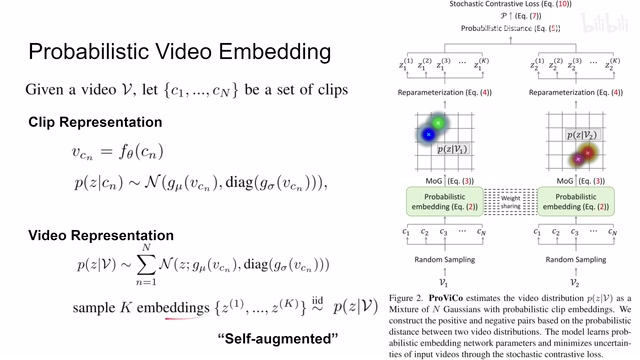
00:05:15–00:06:27 · 画面 010然后呢给每个 clip 建出一个 distribution，建出 distribution 呢求和得到一个 video 的 distribution，根据这个 video distribution 呢再采样再做这个 reparameterization trick，然后呢就得到这 k 个这个 embedding。那么这样子呢我们两个 video 呢就分别被这 k 个 representation 啊给他描述了，那么接下来你再做这个 contrastive learning 就可以了。
所以你看它虽然没有在这个输入的这个视频的这个模态上这个像素这个空间做 data augmentation，但是呢它通过这一系列的这个采样的过程实际上也实现了一种这个 augmentation，也是同样的一个视频，同样的一个输入，但是产生了不同的变化，达到了我们这个 data augmentation 的目的，这是一个它设计比较巧妙的地方。
那么到这里呢我们知道说我们最后是通过一个从 distribution 中采样，采样出 keg 这个 embedding 来，用 keg embedding 去描述这一个 video。那下面呢我们就要来看怎么样根据这 keg embedding 来做这个 contrastive learning，来怎么样对比两个 video。那我们直接来到这里，那 contrastive learning 的核心的问题呢还是怎么样定义正样本，怎么样定义负样本。
00:06:27–00:07:31 · 画面 011
00:06:27–00:07:31 · 画面 011那这里呢我们假设我们有 k 个这个 embedding，一个是从这个 vi 这个 video 里面采的，一个是从 vj 这个 video 里面采的。那这个 zi 和 zj 本质上就是一个有长度的这么一个 vector。那如何衡量这两个样本之间的距离呢？最简单的我们可以计算这个 l1 l2 这样的直接的这种 distance。但是呢这里呢作者使用的是这个巴士距离，马上呢后面我们来看到作者说为什么我们要用这个巴士距离而不是直接用一个 mse。
关于它的数学我们不过多展开，因为我们知道我们之前的 clips representation 也好，把它们加起来得到 video representation 也好，本质上我们还是一个 normal distribution。所以 normal distribution 能够给我们带来计算巴士距离的一个便利，那就是这个式子。那么这两项分别就是视频 distribution 它的方差，然后具体的 sample 它的距离。
这个呢是 80 距离的一个定义。那现在呢我们能定义两个 sample 之间的距离了。那如何定义两个 video 之间的距离呢？因为每一个 video 包含 k 个这个 sample 嘛。那这个就用这个蒙特卡罗估计，本质上就是我多踩几个距离然后求个平均嘛，求一个期望的一个形式。那你可以看到一个视频我们有 k 个 sample，所以呢我们一共可以计算 k 乘 k 个距离。那这个 k 乘 k 个距离它的平均值呢就是两个这个 video 它们之间的这个距离。
00:07:31–00:07:33 · 画面 012
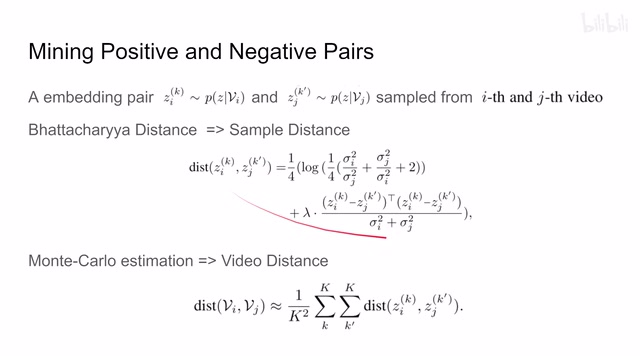
00:07:31–00:07:33 · 画面 01200:07:33–00:08:03 · 画面 013
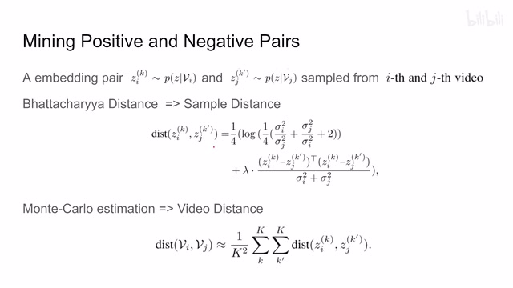
00:07:33–00:08:03 · 画面 013这个呢就是作者怎么样定义两个 video distribution 他们之间的距离。那么马上呢我们就可以用这个距离来定义这个正样本和负样本。那这里呢作者的定义是，如果两个视频他们的这个距离小于一定的域值，或者说同一个视频我分别做两次这种采样得到这个 representation，那因为同一个视频来的嘛，它肯定是正样本嘛。所以这些样本呢都被视为正样本。那相反呢，如果达不到这些条件，那它就是负样本。
00:08:03–00:08:25 · 画面 014
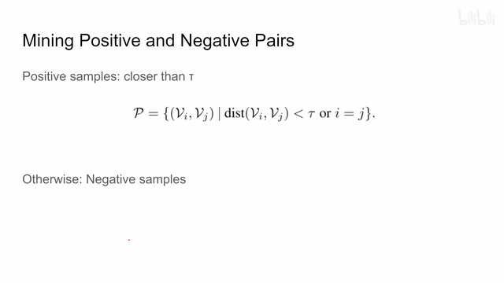
00:08:03–00:08:25 · 画面 01400:08:25–00:08:26 · 画面 015
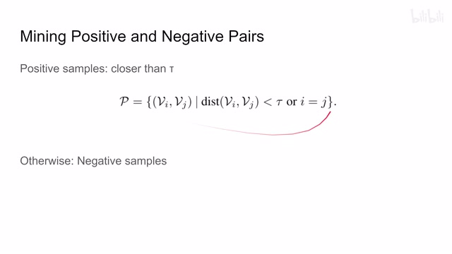
00:08:25–00:08:26 · 画面 01500:08:26–00:08:30 · 画面 016
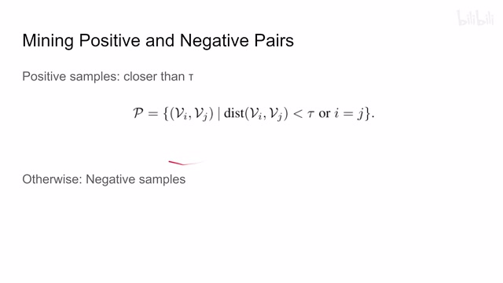
00:08:26–00:08:30 · 画面 016非常直接的一个正负样本的一个定义。那现在呢我们拿到这个正负样本呢，我们能够知道任意两个样本之间它们的这个距离应该怎么样计算了。我们是不是直接套到这个 info NCE 里面就可以了呢？这里呢并不是的。这里作者说呢，它并不适合我们现在的这种概率分布采样的这种这种建模的形式。所以呢，这里作者提出了这个 stochastic 或者叫 soft contrastive loss。
00:08:30–00:10:22 · 画面 017
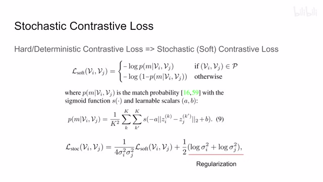
00:08:30–00:10:22 · 画面 017它是怎么样的呢？我们来看到这个 Loss 长这样啊。这个正分样本和负样本，那整体来看它是一个 Log likelihood 或者叫 cross entropy。那么具体来看它求的是哪一个概率呢？它概率的式子呢长成这个样子。其中这个 S 呢是 Sigmoid，然后 A 和 B 呢是两个这个可学习的这个参数。它就相当于做了一个线性的投影嘛。而这个投影的输入呢是两个 sample 的这个 L2 distance。那还是因为我们一个视频有 Keg sample，那两个视频就是 K 乘 K 个。
这个是它构建的 P 概率。那么有了 soft contrastive loss，作者在这个基础上又构建了 stochastic contrastive loss。它你如果看它的表达式在这里，它分为两个部分，第一部分就是我们刚刚说的 soft。这个好理解嘛。我们这个是主要的这个 contrastive learning 的这个 loss 嘛。所以呢，我们就把它放在这里。但是后面呢还有一项，你可以看到他把这两个 video representation 的这个方差标准差啊给他放到这里了。哎，为什么我们有这个东西呢？这里呢作者说这是一个 regulation，你的这个 video 的这个标准差方差不能无限的大。如果他无限的大，你的高斯 distribution 就没有意义了，大家都是几个均值对吧。
他们的表达能力就没有那么强了。所以这里作者是加了 regularization loss。这个是作者提出的。stochastic contrastive loss那么它就是做contrastive learning 的这一部分当然有了，它还没完。
00:10:22–00:12:22 · 画面 018
00:10:22–00:12:22 · 画面 018这里我们还需要一个重要的假设。就是我们希望我们的。videodistribution它要能够接近gaussian distribution prior你想因为我们的每个 clips。它是 normal distribution它是 gaussian distribution那么把每个 clips 加起来。我们每个 video它也应该是接近一个高深。
就随标准所以我们要加这样一个鲜艳。让我们的这个 representation它的分布是一个好看的这么一个高深就随标准怎么办它跟我们 vee 里面做的一样。也是这个 KL divergence让我们这个 representation它最后采样出来的。这个样本的分布接近一个 normal distribution接近一个高深就随标准对于两个 video都是这样子那就用了这个 KL divergence所以你看到最后这个 loss。
整个它又加了这一项那么换句话来理解。我们在 VAE 里面做的 loss一个是 Decoder Reconstruction Loss再就是 Encoder 的它的 KL Divergence现在相当于我同样是做 VAE但是因为我们没有 Decoder 了。我们把 Decoder Loss换成了 Contrast Loss也就是这样stochastic 这个 contrastive loss 然后对于 encoder 的部分呢因为我们都希望得到一个近似于这个 gaussian distribution 的这么一个 representation 所以呢它的这个 kl divergence 这个 loss 呢是没有变的相当于 vae 里面把 decoder loss 换成了一个 contrastive loss 那这个呢就是本文的思想那么最后呢作者还解释了说为什么我们两个 sample 之间我们要用这个要用概率的距离比如说这个 80 距离而不是用这个 o 式距离那为什么呢这里作者举了一个例子啊
那假如说这个蓝色的红色的还有绿色的是我们的这个采样的点啊那如果我们使用欧式距离来计算呢我们发现这个 X1 和 X2 它的这个欧式距离呢大于这个 X2 和 X3 他们之间这个欧式距离但是你从 distribution 的角度来看呢明显是 X2 和 X3 他们的距离更靠近一点他们的 distribution 更相近一点你这个时候如果想拉近 X1 和 X2 你当然可以把这个均值首先靠拢
00:12:22–00:13:04 · 画面 019
00:12:22–00:13:04 · 画面 019但是呢同时它又存在另一种可能就是它可以直接把这个 X1 标准差做得非常大那这样子呢在这种极端的情况下也能够满足说我们两个这个样本它们的这个 MSE 它们的这个欧式的距离减小但是实际上你看这个 X1 和 X2 会差得很远所以呢我们有必要同时监视这两个地区标准之间它们的这个它们的标准差的大小同时它们的均值的差的大小用来确保这两个 normal distribution 它们的这个形状是尽量接近的那这个呢就是作者想强调的当然这是一个极端的例子啊好的那么以上就是本文的主要的技术细节了那么我们下面来看作者汇报的一些结果首先是这个 action recognition 在这个 UCF-101 还有这个 HMDB-51 上面作者汇报了一些结果那感兴趣的朋友呢可以仔细的对比那包括作者还汇报了这个 kinetics 这些数据集
00:13:04–00:13:05 · 画面 020
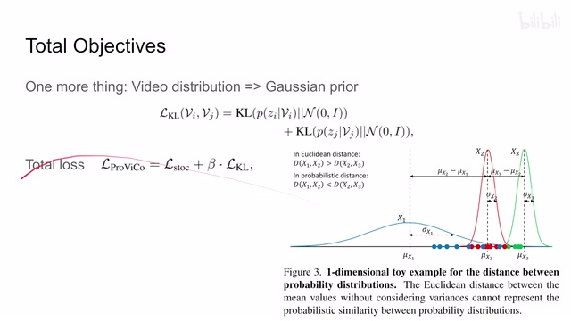
00:13:04–00:13:05 · 画面 02000:13:05–00:13:08 · 画面 021
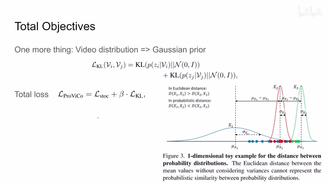
00:13:05–00:13:08 · 画面 02100:13:08–00:13:19 · 画面 022
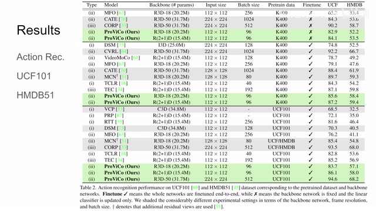
00:13:08–00:13:19 · 画面 02200:13:19–00:14:03 · 画面 023
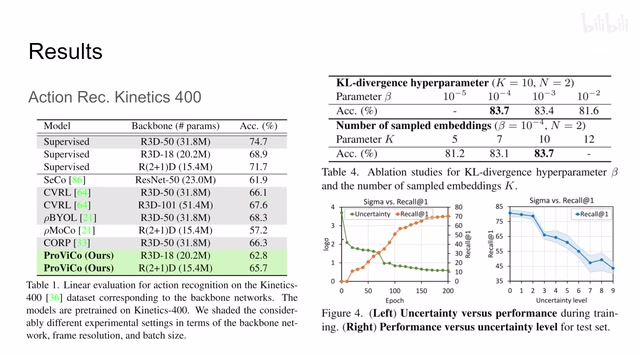
00:13:19–00:14:03 · 画面 023此外作者还有不同的 Application 比如说 KL Divergence 那个 BetaBeta VAE 里面这个 Beta 它应该取多少然后每一个 video 采多少 Sample 看起来是越多越好那么还有就是 Uncertainty 对我们的性能的影响这里作者用的是 Log Sigma 就是我们的标准差然后你可以看到随着训练的继续我们的 uncertainty 逐渐下降我们的准确率逐渐上升同时根据不同的 uncertainty 作者画出了 10 个级别随着数量的增加不确定性就更加增加这个时候你可以看到模型的性能的趋势很有意思的一个事情这里更多的 ablation 包括作者这里尝试了不同的概率分布之间的他们的距离
00:14:03–00:14:17 · 画面 024
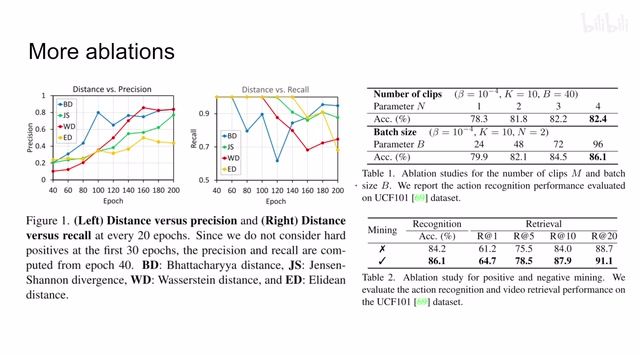
00:14:03–00:14:17 · 画面 024比如说本文默认使用的巴士距离还有像 verse distance 还有欧式距离等等感兴趣的朋友可以仔细的看一下包括这边还有更多的 ablation 总体来说肯定是 batch size 越大越好然后每个视频采样的 clips 越多越好此外作者还有一大部分实验是包括 video retrieval 的这里感兴趣的朋友还是非常推荐你去原文查看好的那么以上就是我对这个文章的一个快速的整理
00:14:17–00:14:18 · 画面 025
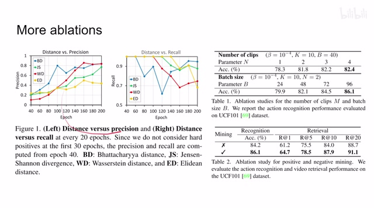
00:14:17–00:14:18 · 画面 02500:14:18–00:14:46 · 画面 026
00:14:18–00:14:46 · 画面 026总体来说呢他把这种不确定性的这种思想引入到了 contrastive learning 里面还是取得了一定的效果的那么感谢您的收看再见
00:14:46–00:14:46 · 画面 027
00:14:46–00:14:46 · 画面 027转写与来源说明 · 7 个自动复核提示
保留 103 个原始语音片段，7 个片段触发自动复核提示。提示仅用于定位可能的术语、重复或识别问题，不等于已确认错误。
讲解画面为源视频截图（640×360），不是可编辑 PPT 文件。全片按每秒 2 帧扫描内容变化，逐步展开页保留；连续动画保留代表画面。清晰度受源视频限制。
原视频：paper/合集_2026-10-16_表征学习/[论文简析]Probabilistic Representations for Video Contrastive Learning[2204.03946].mp4
SHA-256：b05e99f363df5794c6ae10e0a84bb29b18cb7db46b472211b515b752e45f6bd9
Probabilistic Representations for Video Contrastive Learning
那首先,这个 video contrastive learning
contrastive learning 的这一部分
videodistribution
gaussian distribution prior
它是 gaussian distribution
让我们的这个 representation
全文按视频语音与画面制作。原论文可从上方链接下载；完整资料包保留全文、原始逐字稿、字幕和校对记录。